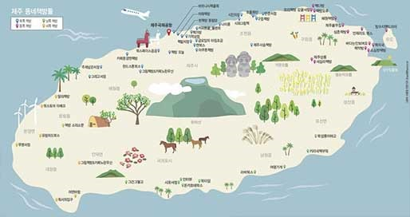
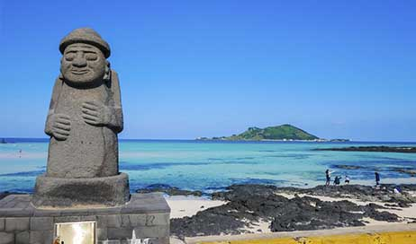

제주특별자치도는 대한민국의 제주도와 부속 섬들을 관할하는 특별자치도이다.
대한민국에서 가장 큰 섬인 제주도 본섬을 비롯하여 마라도, 우도, 추자군도 등을
포함한 유인도 8개, 무인도 55개로 구성되어 있다.


제주도는 중앙의 한라산을 중심으로 완만한 경사를 이루어 동서 73 km, 남북 31km의 타원형 모양을 하고 있다.
학술·문화·관광·생태 등의 가치와 중요성을 인정받아 2007년 6월, 제주 화산섬과 용암 동굴이라는 이름으로 세계자연유산에 등록되었다.
2010년 10월 3일 유네스코 세계지질공원네트워크(GGN)가 제주도 지역에 세계지질공원을 인증했다.